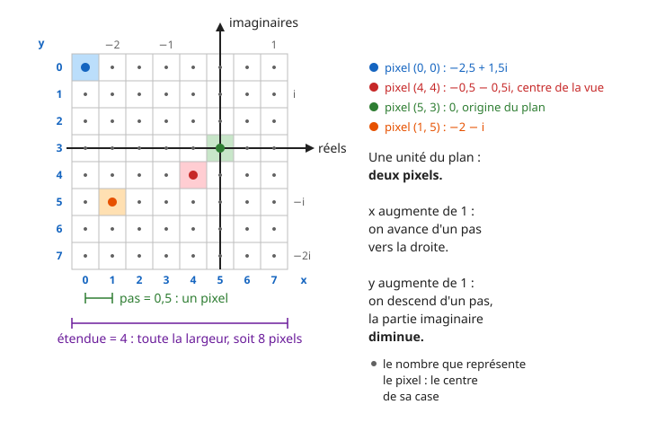

Fractales : Mandelbrot et Julia
Une seule suite, \(z_{n+1} = z_n^2 + c\), où \(z_n\) et \(c\) sont des nombres complexes, suffit à dessiner les deux images de cette page. Selon la valeur de \(c\), la suite reste bornée ou part à l'infini, et on colorie chaque point du plan selon ce qu'elle fait.
Il faut savoir ce qu'est la limite d'une suite et connaître les nombres complexes : écriture \(a + ib\), module \(|z|\), calcul de \(z^2\).
Mise en place
Crée un fichier fractales.py dans un répertoire du projet. Tu y écriras toutes les fonctions de cette page, dans l'ordre.
Tout ce qui n'est pas une fonction se place dans le bloc if __name__ == "__main__":. Garde ce bloc à la fin du fichier.
Python connaît les nombres complexes. Le nombre \(i\) s'écrit 1j, et \(3 + 4i\) s'écrit 3 + 4j. Si z est un complexe, z.real est sa partie réelle, z.imag sa partie imaginaire, et abs(z) son module. complex(a, b) construit le complexe \(a + ib\) à partir de deux réels.
Les complexes en Python
Sur ton cahier, écris ce que vaut chaque expression :
abs(3 + 4j)1j * 1j(1 + 1j) ** 2complex(2, -1).imag
Puis vérifie dans la console Python.
Réponse
5.0: \(\sqrt{3^2 + 4^2} = 5\). Le module est toujours unfloat.(-1+0j): \(i^2 = -1\).2j: \((1 + i)^2 = 1 + 2i + i^2 = 2i\).-1.0
Partie 1 - L'ensemble de Mandelbrot
Étape 1 - La suite
Pour un nombre complexe \(c\) fixé, on définit la suite :
Calculer des termes
Sur ton cahier, calcule \(z_0\) à \(z_4\) pour chacune des valeurs \(c = 0\), \(c = -1\), \(c = 1\), \(c = i\) et \(c = -2\). Pour chacune, réponds ensuite :
- la suite \((|z_n|)\) est-elle bornée ?
- la suite \((z_n)\) a-t-elle une limite ? Laquelle ?
Réponse
| \(c\) | \(z_0\) à \(z_4\) | bornée ? | limite ? |
|---|---|---|---|
| \(0\) | \(0, 0, 0, 0, 0\) | oui | \(0\) |
| \(-1\) | \(0, -1, 0, -1, 0\) | oui | aucune : elle alterne entre \(0\) et \(-1\) |
| \(1\) | \(0, 1, 2, 5, 26\) | non | \(+\infty\) |
| \(i\) | \(0, i, -1 + i, -i, -1 + i\) | oui | aucune : à partir de \(z_2\), elle alterne entre \(-1 + i\) et \(-i\) |
| \(-2\) | \(0, -2, 2, 2, 2\) | oui | \(2\) |
Piège : bornée n'est pas convergente
Pour \(c = -1\) et \(c = i\), la suite n'a pas de limite, et pourtant elle ne part pas à l'infini : elle est bornée. C'est cette propriété, et pas la convergence, qui définit l'ensemble de Mandelbrot.
Écrire terme (entraînement)
Étape 2 - Bornée ou pas : le critère du module 2
L'ensemble de Mandelbrot \(\mathcal{M}\) est l'ensemble des nombres complexes \(c\) pour lesquels la suite \((|z_n|)\) est bornée.
Un programme ne peut pas calculer une infinité de termes. On s'appuie sur une propriété, admise ici et démontrée dans le bonus 1 :
Propriété (admise)
Si un terme de la suite vérifie \(|z_n| > 2\), alors \(|z_n| \to +\infty\) : la suite n'est pas bornée, et \(c\) n'est pas dans \(\mathcal{M}\).
On calcule donc les termes un par un, et on s'arrête dès que le module dépasse 2. Comme il faut bien s'arrêter, on se fixe un nombre maximal de termes, n_max.
Calculer à la main
On appelle \(n\) le premier indice tel que \(|z_n| > 2\). Sur ton cahier, avec n_max = 10 :
- Que vaut \(n\) pour \(c = 1\) ? Pour \(c = 3\) ?
- Pour \(c = -2\), existe-t-il un tel \(n\) ?
- Pour \(c = 0\), la fonction renverra
n_max. Cela prouve-t-il que \(0\) est dans \(\mathcal{M}\) ? Et pour un \(c\) quelconque ?
Réponse
- Pour \(c = 1\) : \(|z_0| = 0\), \(|z_1| = 1\), \(|z_2| = 2\), \(|z_3| = 5\). Donc \(n = 3\). Pour \(c = 3\) : \(z_1 = 3\), donc \(n = 1\).
- Non : les modules valent \(0, 2, 2, 2\dots\), et \(2\) n'est pas strictement supérieur à \(2\). \(-2\) est dans \(\mathcal{M}\).
- Pour \(c = 0\), oui, puisqu'on sait que la suite est nulle. Mais en général, non : la suite pourrait dépasser 2 au terme suivant. Renvoyer
n_maxveut seulement dire « pas encore sorti aprèsn_maxtermes ».
Écrire iterations (obligatoire)
def iterations(c: complex, n_max: int) -> int:
"""Renvoie le plus petit n < n_max tel que |z_n| > 2, pour la suite
z_0 = 0 et z_{k+1} = z_k ** 2 + c. Renvoie n_max s'il n'y en a pas."""
pass
def test_iterations():
assert iterations(1, 10) == 3
assert iterations(3, 10) == 1
assert iterations(0, 10) == 10
assert iterations(1j, 50) == 50
assert iterations(-2, 10) == ...
Indice léger
Une boucle while avec deux conditions : on continue tant qu'on n'a pas atteint n_max et que le module ne dépasse pas 2.
Indice plus précis
Deux variables, z qui part de 0 et n qui part de 0. À chaque tour : z = z * z + c, puis n = n + 1. La condition est n < n_max and abs(z) <= 2.
Étape 3 - Du pixel au nombre complexe
Pour dessiner, il faut savoir quel nombre complexe chaque pixel représente.
Dans une image, un pixel est repéré par ses coordonnées (x, y). L'origine (0, 0) est le coin supérieur gauche : x augmente vers la droite, et y augmente vers le bas. Dans le plan complexe, un nombre \(a + ib\) a sa partie réelle \(a\) sur l'axe horizontal et sa partie imaginaire \(b\) sur l'axe vertical, qui monte vers le haut.
Le dessin montre une image de 8 × 8 pixels posée sur le plan. Chaque pixel représente le nombre placé au centre de sa case. Le pixel (0, 0) représente \(-2{,}5 + 1{,}5i\), et l'origine du plan n'est pas au milieu de l'image. Une unité du plan correspond à deux pixels, donc d'un pixel à son voisin, on avance de \(0{,}5\).

Lire le dessin
Sur ton cahier :
- Quel nombre représente le pixel
(1, 0)? Le pixel(0, 1)? Le pixel(6, 3)? Le pixel(7, 7)? - Quel pixel représente le nombre \(1 + i\) ?
- Quand
xaugmente de 1, que devient la partie réelle ? Quandyaugmente de 1, que devient la partie imaginaire ? - Écris la partie réelle \(a\) en fonction de
x, puis la partie imaginaire \(b\) en fonction dey.
Réponse
(1, 0): \(-2 + 1{,}5i\).(0, 1): \(-2{,}5 + i\).(6, 3): \(0{,}5\).(7, 7): \(1 - 2i\).- Le pixel
(7, 1). La partie réelle \(1\) est à \(3{,}5\) unités de celle de la colonnex = 0, qui vaut \(-2{,}5\), soit 7 pixels :x = 7. La partie imaginaire \(1\) est à \(0{,}5\) unité sous celle de la ligney = 0, qui vaut \(1{,}5\), soit 1 pixel :y = 1. - La partie réelle augmente de \(0{,}5\). La partie imaginaire diminue de \(0{,}5\) :
ydescend, la partie imaginaire monte. - \(a = -2{,}5 + 0{,}5 \times x\) et \(b = 1{,}5 - 0{,}5 \times y\).
Dans le cas général, \(-2{,}5\) est la partie réelle de la colonne de gauche, notée gauche, \(1{,}5\) la partie imaginaire de la ligne du haut, notée haut, et \(0{,}5\) le pas, la distance entre deux pixels voisins. Les deux formules deviennent :
L'interface ne retient pas gauche et haut. Elle retient le centre de la vue et son étendue, la largeur de la vue dans le plan, parce que c'est ce qu'un zoom modifie : un clic déplace le centre au point cliqué et divise l'étendue par 2. On retrouve le reste à partir d'eux :
pas = etendue / largeur, puisque l'étendue se partage entre leslargeurpixels d'une ligne,gauche = centre.real - etendue / 2, puisque le pixel du centre, en colonnelargeur / 2, est àlargeur / 2pas de la colonne de gauche,haut = centre.imag + hauteur * pas / 2, puisque le pixel du centre, en lignehauteur / 2, est àhauteur / 2pas de la ligne du haut.
Le centre du dessin
- Sur le dessin, quel est le centre de la vue ? Quelle est son étendue ?
- Retrouve
gaucheethautavec les deux dernières formules de la liste.
Réponse
- Le centre de la vue est le pixel
(4, 4), qui représente \(-0{,}5 - 0{,}5i\). L'étendue vaut \(4\), puisqu'une ligne compte 8 pixels et que le pas vaut \(0{,}5\). pas = 4 / 8 = 0.5.gauche = -0.5 - 4 / 2 = -2.5ethaut = -0.5 + 8 × 0.5 / 2 = 1.5. Ce sont bien les nombres du pixel(0, 0), alors que l'origine du plan est ailleurs, au pixel(5, 3).
Après un zoom
Une image de 4 × 4 pixels est centrée sur \(-1 + i\), avec une étendue de 2. Sur ton cahier :
- Calcule
pas,gaucheethaut. - Quel nombre représente le pixel
(0, 0)? Le pixel(2, 2)? Le pixel(1, 3)?
Réponse
pas = 2 / 4 = 0.5,gauche = -1 - 1 = -2,haut = 1 + 4 × 0.5 / 2 = 2.(0, 0): \(-2 + 2i\).(2, 2): \(-2 + 2 \times 0{,}5 = -1\) et \(2 - 2 \times 0{,}5 = 1\), donc \(-1 + i\), le centre.(1, 3): \(-2 + 0{,}5 = -1{,}5\) et \(2 - 3 \times 0{,}5 = 0{,}5\), donc \(-1{,}5 + 0{,}5i\).
Piège : le signe moins
Dans \(b = \text{haut} - y \times \text{pas}\), le signe est moins : y augmente vers le bas, et la partie imaginaire augmente vers le haut. Avec un plus, l'image est retournée de haut en bas.
Écrire vers_complexe (obligatoire)
def vers_complexe(x: int, y: int, largeur: int, hauteur: int,
centre: complex, etendue: float) -> complex:
"""Renvoie le nombre complexe représenté par le pixel (x, y), dans une
image de largeur × hauteur pixels d'origine le coin supérieur gauche,
centrée sur centre et dont la largeur représente etendue."""
pass
def test_vers_complexe():
assert vers_complexe(4, 4, 8, 8, -0.5 - 0.5j, 4) == -0.5 - 0.5j
assert vers_complexe(0, 0, 8, 8, -0.5 - 0.5j, 4) == -2.5 + 1.5j
assert vers_complexe(5, 3, 8, 8, -0.5 - 0.5j, 4) == 0
assert vers_complexe(1, 5, 8, 8, -0.5 - 0.5j, 4) == ...
assert vers_complexe(1, 3, 4, 4, -1 + 1j, 2) == -1.5 + 0.5j
Indice
Calcule d'abord pas, gauche et haut avec les trois formules de la liste, puis a et b. complex(a, b) construit le résultat.
Étape 4 - L'image
La grille a hauteur lignes et largeur colonnes. Chaque case contient iterations du nombre représenté par le pixel.
Piège : g[y][x], et non g[x][y]
Une grille est une liste de lignes. Le pixel (x, y) est dans la ligne y, à la colonne x : sa case est g[y][x], y en premier. La boucle sur y est donc la boucle extérieure, celle qui construit les lignes.
Écrire grille_mandelbrot (obligatoire)
def grille_mandelbrot(largeur: int, hauteur: int, centre: complex,
etendue: float, n_max: int) -> Grille:
"""Renvoie la grille des valeurs de iterations, pixel par pixel."""
pass
def test_grille_mandelbrot():
assert grille_mandelbrot(4, 4, 0, 4, 10) == [
[1, 1, 2, 1],
[1, 3, 10, 2],
[10, 10, 10, 3],
[1, 3, 10, 2],
]
Indice
Une double boucle, y sur les lignes à l'extérieur, x sur les colonnes à l'intérieur. Chaque case vaut iterations(vers_complexe(x, y, largeur, hauteur, centre, etendue), n_max).
Le fichier interface_fractales.py dessine ta grille dans une fenêtre. Il utilise tes fonctions vers_complexe et grille_mandelbrot, et tu n'as rien à y écrire. Un pixel est noir quand iterations vaut n_max, et coloré sinon : la couleur dépend du nombre de termes qu'il a fallu pour dépasser 2.
Place-le à côté de fractales.py, installe PySide6 avec uv add pyside6, puis lance-le avec uv run interface_fractales.py. Dans l'image :
- clic gauche : zoom, centré sur le point cliqué,
- clic droit : dézoom,
- survol : la barre du bas affiche le pixel
(x, y)et le nombre complexe que ta fonctionvers_complexelui associe.
Explorer
- Repère les points \(0\), \(-1\), \(1\) et \(-2\) sur l'image. Sont-ils noirs ? Compare avec l'étape 1.
- Zoome six ou sept fois sur le bord de la partie noire. Que vois-tu apparaître ?
- À force de zoomer, l'image devient grossière, et le noir s'étale. Change
n_maxde50à300, puis clique sur Dessiner. Qu'est-ce qui change, et pourquoi ?
Réponse
- \(0\), \(-1\) et \(-2\) sont dans la partie noire, \(1\) est en dehors. \(-2\) est tout au bout de la longue pointe vers la gauche.
- Des formes de plus en plus fines, et de petites copies de l'ensemble entier, reliées au reste par des filaments.
- Près du bord, la suite met beaucoup de termes à dépasser 2. Avec
n_max = 50, ces points sont comptés noirs alors qu'ils sont hors de \(\mathcal{M}\). Avecn_max = 300, ils sont colorés, et les détails réapparaissent. Le dessin est plus long : pour chaque pixel noir, on calculen_maxtermes.
À force de zoomer, l'image finit par se couvrir de bandes verticales, même avec un grand n_max. Ce n'est plus la suite qui est en cause, c'est la façon dont l'ordinateur range les nombres.
Chaque clic divise l'étendue par 2 : après k zooms depuis la vue de départ, l'étendue vaut 3 / 2 ** k. Plutôt que de cliquer des dizaines de fois en attendant chaque image, on étudie directement ce que fait vers_complexe.
Jusqu'où peut-on zoomer ? (obligatoire)
-
Écris la fonction
nb_confondus. Les parties réelles d'une ligne augmentent de gauche à droite, donc deux pixels qui représentent la même partie réelle sont forcément voisins.def nb_confondus(centre: complex, etendue: float) -> int: """Renvoie le nombre de pixels de la ligne y = 150 d'une image de 300 × 300 pixels qui représentent la même partie réelle que leur voisin de gauche.""" pass def test_nb_confondus(): assert nb_confondus(-0.5, 3) == 0 assert nb_confondus(-0.743643887037151 + 0.13182590420533j, 3 / 2 ** 47) == 108 -
Avec
centre = -0.743643887037151 + 0.13182590420533j, un point du bord de l'ensemble, affichenb_confondus(centre, 3 / 2 ** k)pourkallant de40à50. À partir de combien de zooms des pixels se confondent-ils ? Que vaut alors le pas ? math.ulp(a), aprèsimport math, renvoie l'écart entre le flottantaet le flottant suivant : aucun flottant n'existe entre les deux. Calculemath.ulp(centre.real)et compare-le au pas de la question 2.- Recommence les questions 2 et 3 avec
centre = -0.1 + 0.95j. Qu'est-ce qui change ? Pourquoi ?
Indice pour la question 1
Une boucle sur x de 1 à 299, qui compare vers_complexe(x, 150, 300, 300, centre, etendue).real à la même valeur pour x - 1.
Réponse
python def nb_confondus(centre: complex, etendue: float) -> int: """Renvoie le nombre de pixels de la ligne y = 150 d'une image de 300 × 300 pixels qui représentent la même partie réelle que leur voisin de gauche.""" n = 0 for x in range(1, 300): a = vers_complexe(x, 150, 300, 300, centre, etendue).real a_gauche = vers_complexe(x - 1, 150, 300, 300, centre, etendue).real if a == a_gauche: n = n + 1 return n0jusqu'à 46 zooms, puis108à 47 zooms,203à 48,251à 49,275à 50. À 47 zooms, l'étendue vaut environ \(2{,}13 \times 10^{-14}\) et le pas environ \(7{,}1 \times 10^{-17}\).math.ulp(centre.real)vaut environ \(1{,}1 \times 10^{-16}\), soit exactement \(2^{-53}\). À 46 zooms, le pas, environ \(1{,}4 \times 10^{-16}\), est encore plus grand : chaque pixel a son flottant. À 47 zooms, le pas est plus petit que l'écart entre deux flottants : plusieurs pixels voisins tombent sur le même flottant, représentent le même nombre, et ont donc la même couleur. Ce sont les bandes.- Les pixels ne se confondent qu'à partir de 50 zooms.
math.ulp(0.1)vaut \(2^{-56}\), huit fois moins que \(2^{-53}\) : les flottants sont plus serrés près de 0. Un flottant garde 53 chiffres binaires significatifs, quelle que soit sa taille. L'écart entre deux flottants voisins est donc proportionnel au nombre lui-même : la précision est relative, pas absolue.
Partie 2 - Les ensembles de Julia
Étape 5 - Même suite, autre point de départ
On garde la même suite, mais on change ce qui varie. Cette fois, \(c\) est fixé, et c'est le premier terme \(z_0 = z\) qui parcourt le plan :
L'ensemble de Julia rempli \(K_c\) est l'ensemble des nombres complexes \(z\) pour lesquels la suite \((|z_n|)\) est bornée. Il y a donc un ensemble \(K_c\) pour chaque valeur de \(c\).
On garde le critère du module 2 : il reste valable tant que \(|c| \leqslant 2\) (voir le bonus 1).
Le cas c = 0
Avec \(c = 0\), la suite est \(z_0 = z\) et \(z_{n+1} = z_n^2\).
- Exprime \(z_n\) en fonction de \(z\) et de \(n\), puis \(|z_n|\) en fonction de \(|z|\).
- Quelle est la limite de \(|z_n|\) si \(|z| < 1\) ? Si \(|z| = 1\) ? Si \(|z| > 1\) ?
- Quelle est la forme de \(K_0\) ?
Réponse
- \(z_1 = z^2\), \(z_2 = z^4\), \(z_3 = z^8\), donc \(z_n = z^{2^n}\) et \(|z_n| = |z|^{2^n}\).
- C'est une suite géométrique de raison \(|z|\), prise aux rangs \(2^n\). Si \(|z| < 1\), la limite est \(0\). Si \(|z| = 1\), la suite est constante égale à \(1\). Si \(|z| > 1\), la limite est \(+\infty\).
- \(K_0\) est l'ensemble des \(z\) tels que \(|z| \leqslant 1\) : le disque de centre \(0\) et de rayon \(1\).
Le cas c = -1
Sur ton cahier, calcule \(z_0\) à \(z_4\) pour \(z = 1\), puis pour \(z = 2\). Ces deux points sont-ils dans \(K_{-1}\) ?
Réponse
- \(z = 1\) : \(1, 0, -1, 0, -1\). La suite est bornée : \(1\) est dans \(K_{-1}\).
- \(z = 2\) : \(2, 3, 8, 63, 3968\). Dès \(z_1 = 3\), le module dépasse 2 : \(2\) n'est pas dans \(K_{-1}\).
Écrire iterations_julia (obligatoire)
def iterations_julia(z: complex, c: complex, n_max: int) -> int:
"""Renvoie le plus petit n < n_max tel que |z_n| > 2, pour la suite
z_0 = z et z_{k+1} = z_k ** 2 + c. Renvoie n_max s'il n'y en a pas."""
pass
def test_iterations_julia():
assert iterations_julia(0.5, 0, 20) == 20
assert iterations_julia(3, 0, 20) == 0
assert iterations_julia(1j, 0, 20) == 20
assert iterations_julia(1, -1, 20) == 20
assert iterations_julia(2, -1, 20) == ...
Indice
Compare avec iterations : une seule chose change.
Une seule fonction pour les deux (obligatoire)
iterations et iterations_julia ont presque le même corps.
- Quel appel de
iterations_juliacalcule la même chose queiterations(c, n_max)? - Remplace le corps de
iterationspar une seule ligne qui utiliseiterations_julia. Relancetest_iterationsettest_grille_mandelbrot: ils doivent passer sans être modifiés.
Réponse
iterations_julia(0, c, n_max): la suite de Mandelbrot est celle de Julia qui part de \(z_0 = 0\).python def iterations(c: complex, n_max: int) -> int: """Renvoie le plus petit n < n_max tel que |z_n| > 2, pour la suite z_0 = 0 et z_{k+1} = z_k ** 2 + c. Renvoie n_max s'il n'y en a pas.""" return iterations_julia(0, c, n_max)
Étape 6 - L'image de Julia
Écrire grille_julia (obligatoire)
def grille_julia(largeur: int, hauteur: int, centre: complex,
etendue: float, c: complex, n_max: int) -> Grille:
"""Renvoie la grille des valeurs de iterations_julia, pixel par pixel.
Le pixel représente le premier terme z, et c est fixé."""
pass
def test_grille_julia():
assert grille_julia(4, 4, 0, 4, 0, 10) == [
[0, 0, 1, 0],
[0, 2, 10, 2],
[1, 10, 10, 10],
[0, 2, 10, 2],
]
Relance l'interface : elle a trouvé grille_julia, et la liste déroulante propose maintenant Julia. La valeur de \(c\) s'écrit dans la case c = à la façon de Python, par exemple -0.8+0.156j, puis Entrée. En mode Mandelbrot, Maj + clic gauche ouvre l'ensemble de Julia du point cliqué.
Explorer
- Dessine \(K_0\). Retrouves-tu la réponse de l'étape 5 ?
- Dessine \(K_c\) pour \(c = -1\), puis pour \(c = -0.123+0.745j\).
- En mode Mandelbrot, fais Maj + clic sur des points pris dans la partie noire, puis sur des points pris loin d'elle. Que remarques-tu ?
Réponse
- Un disque noir de rayon 1.
- \(c = -1\) donne une suite de bulles reliées entre elles, qu'on appelle la basilique. \(c = -0.123 + 0.745i\) donne le lapin de Douady.
- Pour un point de la partie noire, \(K_c\) a une zone noire d'un seul morceau. Pour un point loin d'elle, il n'y a presque pas de noir.
Étape 7 - Le lien entre les deux ensembles
Dans l'ensemble de Mandelbrot ou pas
On prend \(c = 0\), \(c = -1\), \(c = -0.123+0.745j\) et \(c = 0.3\).
- Calcule
iterations(c, 1000)pour chacun. Lesquels semblent être dans \(\mathcal{M}\) ? - Dans l'interface, dessine \(K_c\) pour chacun, une fois avec
n_max = 50, une fois avecn_max = 300. Que devient le noir ?
Réponse
- Les trois premiers donnent
1000. Pour \(c = 0.3\), on obtient12: \(0.3\) n'est pas dans \(\mathcal{M}\). - Pour les trois premiers, la zone noire change à peine et reste d'un seul morceau. Pour \(c = 0.3\), les quelques pixels noirs disparaissent quand
n_maxaugmente : \(K_{0.3}\) n'a aucune surface, c'est une poussière de points isolés.
Ce que tu viens d'observer est un théorème, démontré par Pierre Fatou et Gaston Julia vers 1919, bien avant que l'on puisse dessiner ces ensembles :
Théorème (admis)
\(K_c\) est d'un seul morceau si et seulement si \(c\) est dans \(\mathcal{M}\). Sinon, \(K_c\) est une poussière de points.
L'ensemble de Mandelbrot est donc la carte de tous les ensembles de Julia : chaque point de la partie noire donne un \(K_c\) d'un seul morceau.
Attention, un \(K_c\) d'un seul morceau n'a pas toujours de zone noire. Essaie \(c = i\), qui est dans \(\mathcal{M}\) d'après l'étape 1 : \(K_i\) est une ligne ramifiée, sans épaisseur, que les pixels ne touchent presque jamais.
Pour aller plus loin
Bonus 1 - Pourquoi 2 ?
On démontre la propriété admise à l'étape 2. On suppose \(|z_n| > 2\) et \(|z_n| \geqslant |c|\).
- Avec l'inégalité triangulaire, montre que \(|z_{n+1}| \geqslant |z_n|^2 - |c|\), puis que \(|z_{n+1}| \geqslant |z_n| \, (|z_n| - 1)\).
- On pose \(q = |z_n| - 1\). Montre que \(q > 1\) et que \(|z_{n+1}| \geqslant q \, |z_n|\).
- Montre par récurrence que \(|z_{n+k}| \geqslant q^k \, |z_n|\) pour tout \(k\), et conclus sur la limite de \(|z_{n+k}|\).
- Pour Mandelbrot : si \(|c| \leqslant 2\), pourquoi l'hypothèse \(|z_n| \geqslant |c|\) est-elle toujours vraie dès que \(|z_n| > 2\) ? Et si \(|c| > 2\), que vaut \(z_1\) ?
Piste pour la question 1
Pour deux complexes \(u\) et \(v\), l'inégalité triangulaire donne \(|u| = |(u + v) - v| \leqslant |u + v| + |v|\), donc \(|u + v| \geqslant |u| - |v|\). Applique-la avec \(u = z_n^2\) et \(v = c\), en te souvenant que le module d'un produit est le produit des modules : \(|z_n^2| = |z_n|^2\). Pour la seconde inégalité, remplace \(|c|\) par plus grand que lui.
Piste pour la question 2
La première partie découle directement de \(|z_n| > 2\). Pour la seconde, réécris le membre de droite de la question 1 avec \(q\).
Piste pour la question 3
Une hypothèse de récurrence qui ne porte que sur \(|z_{n+k}| \geqslant q^k \, |z_n|\) ne suffit pas pour réappliquer la question 1 au rang \(n + k\) : il faut aussi savoir que \(|z_{n+k}| > 2\) et \(|z_{n+k}| \geqslant |c|\). Remarque que \(q^k \, |z_n| \geqslant |z_n|\) puisque \(q > 1\) : tu obtiens ces deux conditions, et aussi \(|z_{n+k}| - 1 \geqslant q\). Pour la limite, \((q^k)\) est une suite géométrique de raison \(q > 1\), et on conclut par comparaison.
Piste pour la question 4
Si \(|c| \leqslant 2\), compare \(|z_n|\), \(2\) et \(|c|\). Si \(|c| > 2\), calcule \(z_1\) à partir de \(z_0 = 0\), et regarde si les deux hypothèses sont vraies au rang 1. Que vaut alors iterations(c, n_max) ? Et pourquoi le critère ne vaut-il, pour Julia, que si \(|c| \leqslant 2\) ?
Bonus 2 - Des symétries
- Sur l'image de Mandelbrot, quelle symétrie vois-tu ? Démontre-la : compare la suite obtenue avec \(c\) et celle obtenue avec son conjugué \(\bar{c}\).
- Sur les images de Julia, quelle symétrie vois-tu ? Compare les suites qui partent de \(z\) et de \(-z\).
Piste pour la question 1
L'image semble symétrique par rapport à l'axe des réels. Note \((z_n)\) la suite obtenue avec \(c\) et \((w_n)\) celle obtenue avec \(\bar{c}\). Montre par récurrence que \(w_n = \overline{z_n}\), en utilisant \(\overline{u + v} = \bar{u} + \bar{v}\) et \(\overline{u \times v} = \bar{u} \times \bar{v}\). Conclus avec \(|\bar{z}| = |z|\) : les deux suites de modules sont les mêmes.
Piste pour la question 2
L'image semble symétrique par rapport à l'origine. Calcule le terme \(z_1\) pour la suite qui part de \(z\), puis pour celle qui part de \(-z\). Que dire des deux suites à partir de ce rang ? Les premiers termes \(z\) et \(-z\) ont-ils le même module ?
Bonus 3 - Une autre puissance
Garde une copie de fractales.py. Dans iterations_julia, remplace z * z + c par z * z * z + c, puis relance l'interface. Combien de « bras » a maintenant l'ensemble de Mandelbrot ? Essaie avec la puissance 4, puis 5.